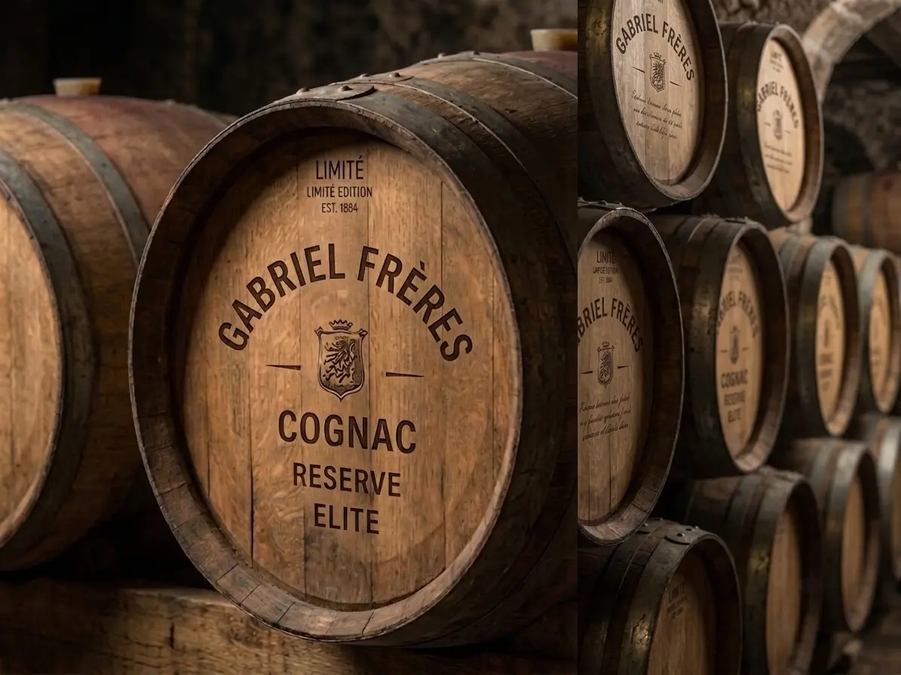
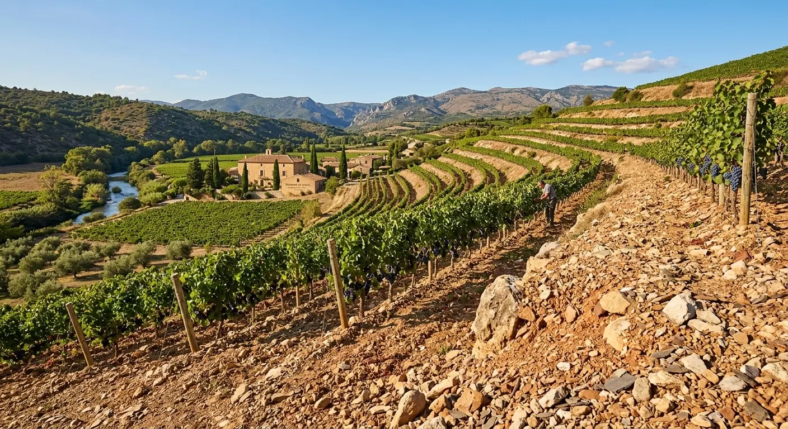
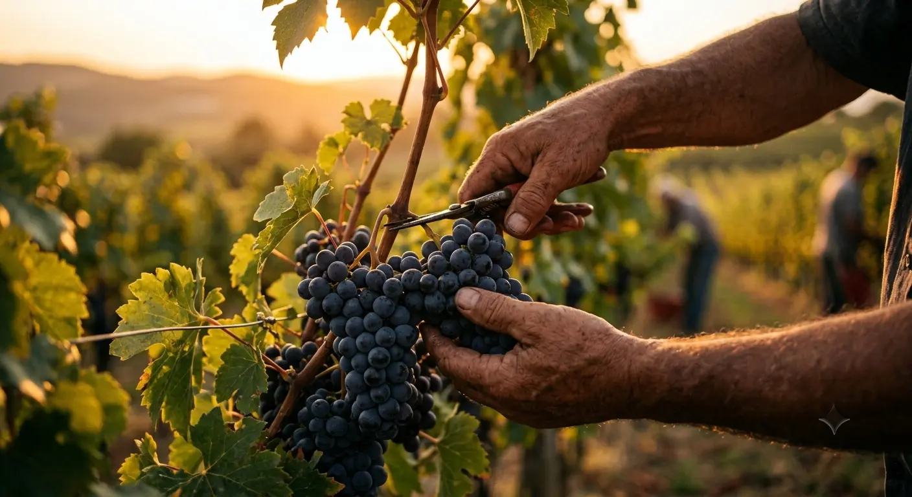
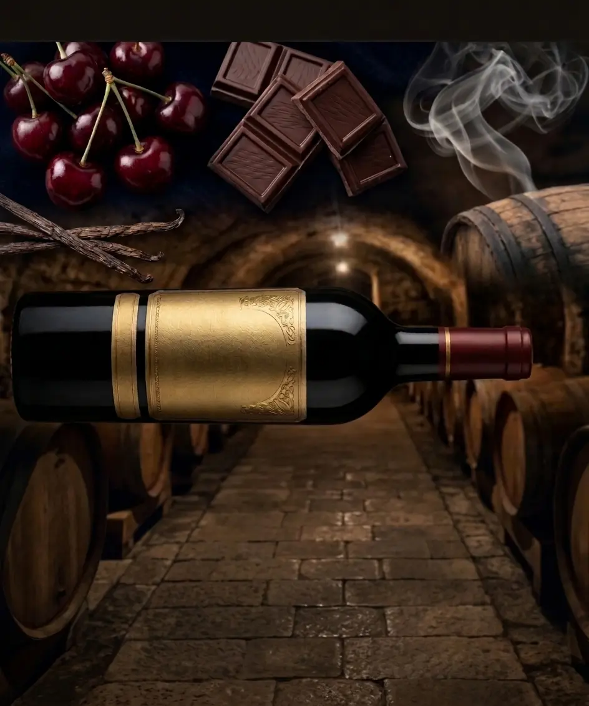
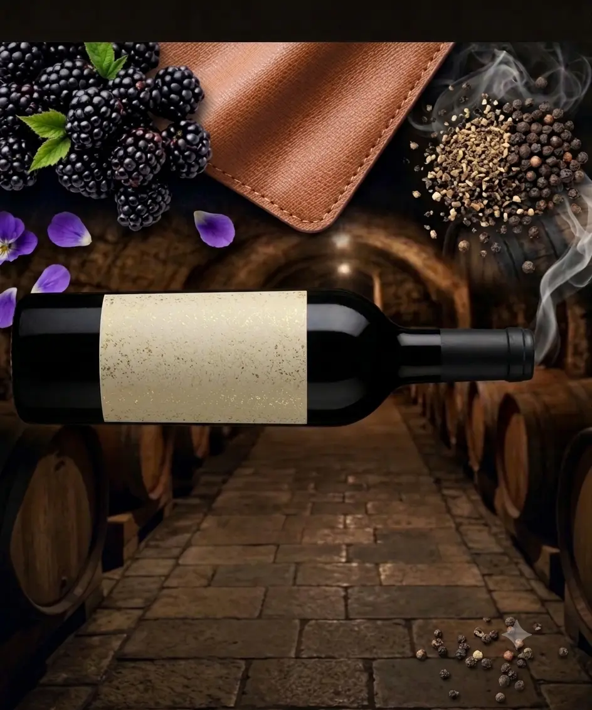

“We don't just make wine — we preserve its history for generations.”
Every bottle of Château Valmy undergoes a long journey of maturation. We use only hand-selected barrels made of noble French oak, which infuse the drink with velvety tannins, subtle notes of vanilla, and a deep, spicy aroma.


More than 100 hectares of elite lands in the sunny south of France. The perfect soil composition and unique microclimate grant the grapes an unsurpassed richness.

We do not use machinery for harvesting. Each bunch is carefully cut by the hands of our masters at the peak of its ideal ripeness, preserving the complete structure of the berries.
The wine matures from 18 to 36 months under strict temperature control in dark family cellars, sealed within selected century-old oak.

Aged 24 months. Profile: ripe cherry, dark chocolate, smoky nuances of tannin.

Aged 18 months. Profile: blackberry, saffiano leather, spicy black pepper.